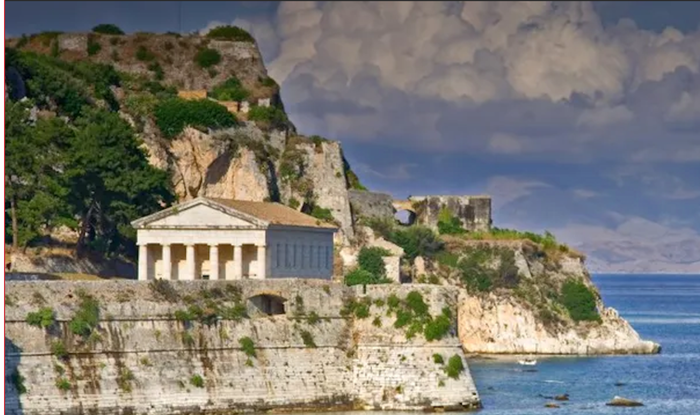

Why Corfu?
Corfu is located in the Adriatic Sea.
It is also home to the Achilleion Palace, built in 1890 by Empress Elisabeth of Austria, also known as Sisi. The palace is dedicated to the Greek hero Achilles and is surrounded by beautiful gardens.
Corfu is also known for its delicious cuisine, which features fresh seafood, local cheeses, and traditional Greek dishes such as sofrito, pastitsada.
Overall, Corfu is a beautiful and historic island that offers something for everyone. Whether you're looking for a relaxing beach vacation, a cultural experience, or delicious food, Corfu has it all.